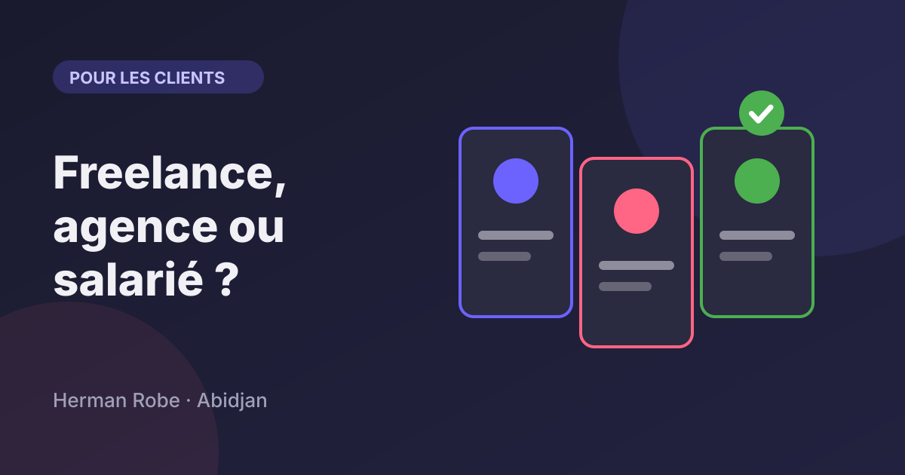
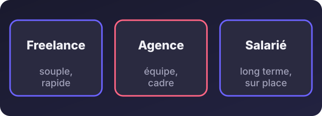
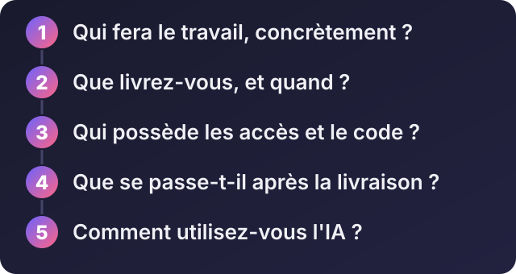

Accueil / Blog / Pour les recruteurs et clients
Pour les recruteurs et clientsFreelance, agence ou salarié : qui choisir pour votre projet digital ?

Écouter cet article · environ 4 min
Vous avez un projet : un site, une application, une automatisation, un outil pour suivre vos commandes. Vous cherchez quelqu'un pour le faire. Trois options se présentent, et personne ne vous explique honnêtement quand choisir laquelle. Les voici, avec leurs avantages et leurs limites.
Une précision : je suis développeur, j'ai travaillé en entreprise comme salarié, et je dirige aussi EA-SERVICES. Je connais donc les trois côtés. Mon but n'est pas de vous orienter vers moi, mais vers ce qui convient à votre situation.
Les trois options

Le freelance
Pour : il est souple, souvent plus économique, et vous parlez directement à celui qui travaille. Pour un besoin bien défini, c'est rapide.
Contre : il est seul. S'il tombe malade ou s'il a trop de clients, votre projet attend. Un freelance couvre rarement tous les métiers (design, développement, rédaction, référencement).
À choisir quand : votre besoin est précis (un site vitrine, une automatisation, un outil), le budget est limité et vous voulez un interlocuteur unique.
L'agence
Pour : une équipe avec des spécialités différentes, un cadre de travail, un suivi de projet, une continuité si quelqu'un est absent.
Contre : c'est plus cher, et vous parlez parfois à un commercial plutôt qu'à celui qui fait le travail. Les petits projets peuvent passer au second plan.
À choisir quand : le projet est large (site, identité, contenus, référencement), ou quand vous avez besoin de plusieurs compétences et d'un engagement de délai.
Le salarié
Pour : il connaît votre entreprise de l'intérieur, il est disponible tous les jours, il construit sur la durée.
Contre : c'est un engagement (salaire, matériel, encadrement). Il lui faut un projet régulier et un responsable pour fixer les priorités.
À choisir quand : le besoin est continu, ou quand les outils numériques sont devenus le cœur de votre activité.
Cinq questions à poser à n'importe quel prestataire

- Qui fera le travail, concrètement ? Le nom de la personne, son expérience, et si elle sous-traite.
- Que livrez-vous, et quand ? Une liste claire de ce qui est inclus, avec une date.
- Qui possède les accès et le code ? Le nom de domaine, l'hébergement et les fichiers doivent être à votre nom, et vous devez les recevoir à la livraison.
- Que se passe-t-il après la livraison ? Corrections, modifications, sauvegardes : inclus ou facturés à part ? Qui répond en cas de problème ?
- Comment utilisez-vous l'IA ? Une bonne réponse explique qu'elle accélère le travail mais que quelqu'un relit, teste et répond du résultat.
Les pièges à éviter
- Choisir uniquement sur le prix. Le moins cher au départ est souvent le plus coûteux après : retards, reprises, accès perdus.
- Ne rien écrire. Même pour un petit projet, mettez par écrit ce qui est promis, les délais et ce qui n'est pas inclus.
- Confondre « site » et « résultat ». Un site n'est pas une fin en soi. Demandez comment il vous amènera des demandes.
- Ne pas tester avec un petit projet. Avant un gros engagement, confiez un premier travail court : vous verrez la façon de travailler.
Une règle pour décider
Si votre besoin a une fin (un projet), choisissez un freelance ou une agence. Si votre besoin est permanent (un outil qui évolue chaque mois), pensez à un salarié. Si vous hésitez, commencez par un freelance sur un premier projet court : cela vous apprendra autant sur votre besoin que sur la personne.
Si vous voulez mon avis sur votre situation, décrivez-la-moi. Je vous dirai ce que je ferais à votre place, même si cela ne passe pas par moi.